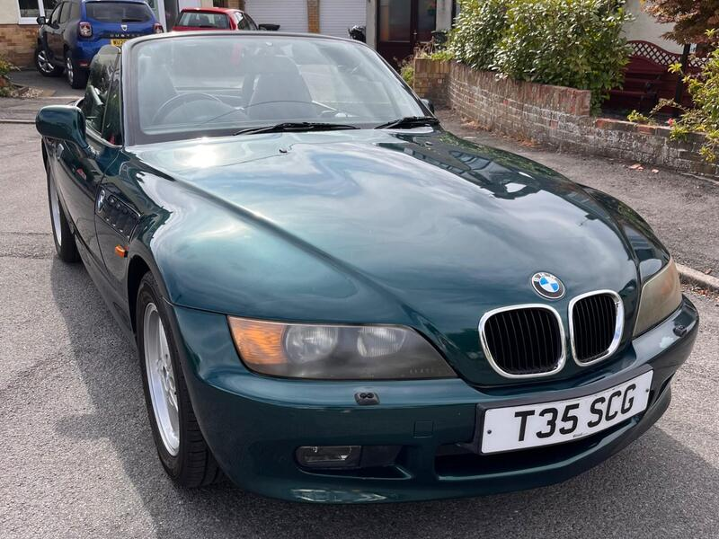
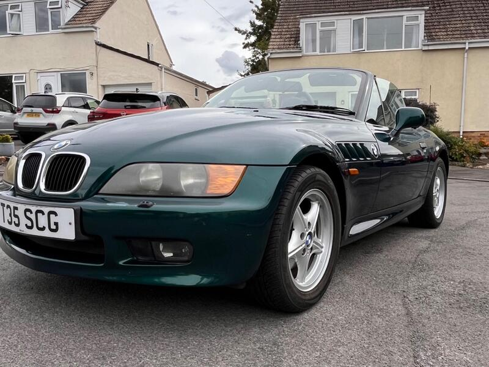
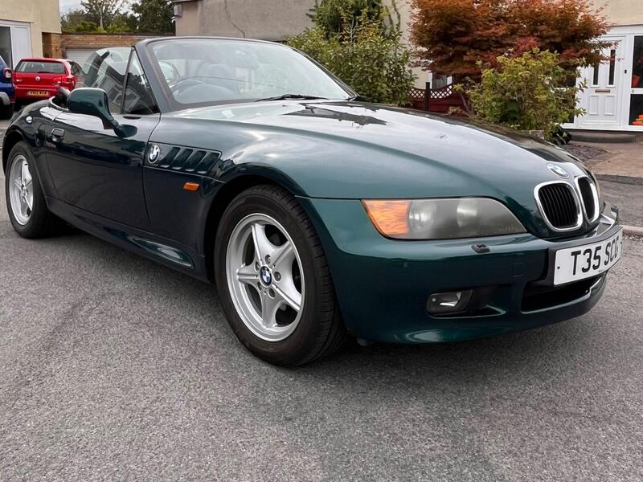
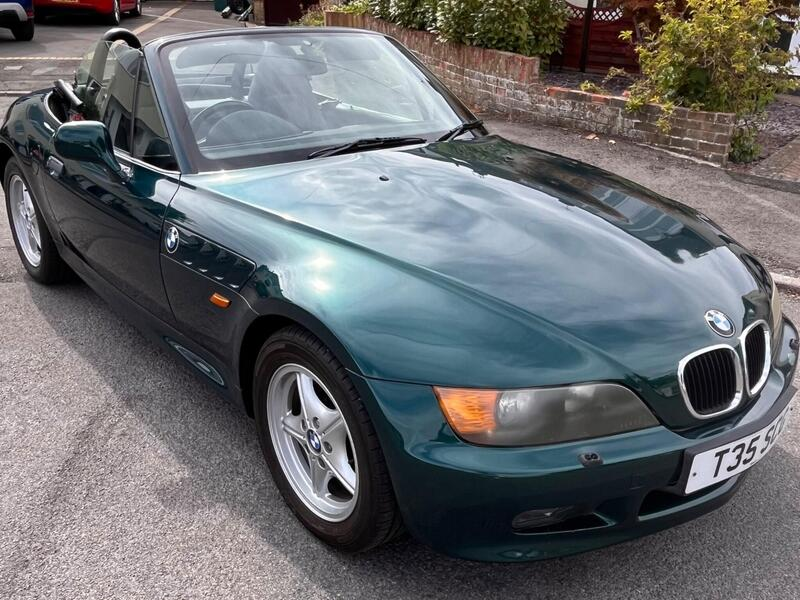

Seller photos from the AutoTrader ad.
BMW Z3 1.9i
A low-mileage Z3, simple and robust.
Key facts
| Price | £2,750 |
|---|---|
| Year | 1999 |
| Miles | 73,842 |
| Model | BMW Z3 1.9i |
| Colour | Green |
| Registration | 1999 (T reg) |
| Owners | 2 owners |
| Service history | Not stated |
| MOT | Fresh (ad), minor advisories |
| Seller | Private |
| Location | Bristol |
| From GU7 | 96 mi (AutoTrader) |
| Checked | 13 Oct 2026 |
Why buy it
- Only 73.8k miles, 1.9 four-cylinder
- Roof operates as it should (ad)
Things to check
96 mi away
Check the rear suspension mounts and boot floor
- BMW Z3 1.9 weak spots
'Not as much of a rust trap as a contemporary MX5 or MG TF'; check arches, sills, rear suspension mounts, boot floor. Simple and robust; cooling plastics – an overheat can turn a pump job into a head gasket; timing-chain rattle, oil leaks.
Seller says (extract)
“Original 1999 T-registered BMW Z3 Roadster featuring the ultra-reliable 1.9-litre 4-cylinder petrol engine. This vehicle has covered 73,000 miles, which is low for a car of this era. It has been well looked after and comes with a fresh, valid MOT certificate. It starts, runs, and drives beautifully. The soft-top roof operates as it should, and the interior condition is very good. MOT Status: A few standard, age-related advisories typical for a 27-year-old BMW - some surface underbody corrosion, minor brake line/hose corrosion, and minor wear to the rear bushes/shocks.…”